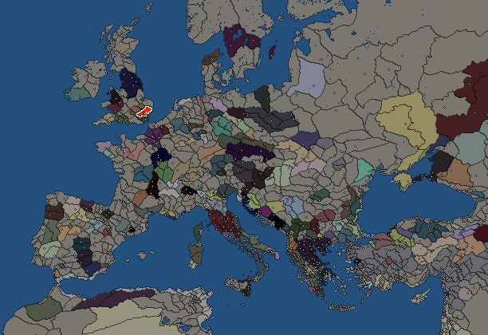
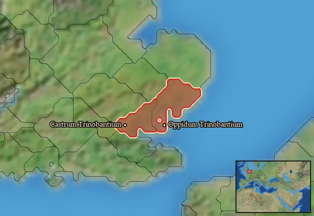

RTR: Imperium Surrectum
RTR: Imperium SurrectumTrinovantes


- difficulty Medium
- Brittonic culture
- believes
 Celtic
Celtic - 2 settlements
- capital Castrum Trinobantium
- 4,400 manpower
- 3 characters
- 13 faction units
- 437 regional units
The campaign brief
"All Britons dye themselves with woad, which gives a blue colour, in order to look more fearsome in battle. Moreover, they have long hair, but are shaved on every part of their body, except the head and upper lip. The Britons possess their wives in common, having ten to twelve at a time; especially brothers share wives with each other, and even parents and their children do; but the children born from such unions are considered the offspring of the husband each woman was first given to as a maiden." – Julius Caesar
Albion is an island beloved by the gods. It is blessed with plentiful showers of rain that fall like heavenly nectar upon our thirsty crops. Likewise, the gods spare Albion from the sudden surges of heat and cold which plague the peoples south of our hallowed shores. Yes, the nations of Albion are blessed indeed, but none more so than us: the Trinovantes. For the gods have declared it the destiny of the Trinovantes to be lords and masters over all peoples of Albion, and beyond. And they have chosen you, our king, to be their instrument of vengeance that will chastise the nations. Such are indeed the divine tidings we druids bring before you, oh king, that the hour of the sword and the chariot is upon us. We Trinovantes must go forth and spill the blood of mankind, until it rains down from the heavens!
Concerning the other great nations of Albion: the gods have given them into our hands for spoils. North of us lie the lands of the Brigantes. They are the most numerous people in all of Albion, but their numbers will count for nothing when we tread their broken bodies under the wheels of our mighty chariots. Beyond them are the wild men of Caledonia; pitiful primitives whom we will vanquish, with science! West of us dwell the fierce Siluri, a fiercely independent nation. Our warriors will laugh and jeer as we make them pass under our yoke. And to the southwest is the rich land of Belerion, where the hills teem with tin and foreign merchants bring in the wealth of the world in exchange for the precious ore plucked from those silvery seams. Yet, we will give them nothing, but take from them everything! But conquering Albion is only the beginning: for the gods will grant you an endless dominion, one upon which the sun never sets.
Crossing the channel will bring us to the lands of our boastful brothers: the boars of Gaul. They think themselves our superiors, but they are dead men. Our brave charioteers will topple those Gallic hogs from their high horses, and into the mud where the swine of Gaul belong. Indeed, we shall cut off their precious lives like one cuts a string. Once the remaining Gauls all kneel before us, we shall go forth and carry the gift of servitude to the whole Celtic world, and they shall be our slaves for all time. This is the will of the gods, for all other Celts have gone astray from proper Celtic ways, and we Trinovantes must lead them back; if by chains, so be it!
Other peoples dwell outside the central regions of the cosmos that we Celts occupy, but the gods gave no instructions concerning those; probably because they are insignificant and not worth the effort to conquer. We have no use for a land like Italy, where the air is so sickly that meat starts to decompose the moment it is cut from a beast, and the inhabitants have gotten so accustomed to eating spoiled food that their most cherished dish is a mash of rotten fish entrails – they call it garble and esteem it more precious than gold! Now, there are no druids in Italy, so its inhabitants are utterly unlearned, and their customs are crude. Particularly strange are the ones called Romans, who do not have families, but instead fill their homes with slaves that they treat as a substitute family. Roman marriages are only temporary, and any children born from such unions are taken into forests to be raised by she-wolves. Since Italian wolves eat grass – like lambs – they would never harm an infant and even rear them with more kindness than any human mother would. As a result of the loving nurturing of the she-wolves, the Romans are the gentlest people on earth – kind to men and beasts alike. Indeed, if there is one people in this world that is completely harmless, it is the Romans, who must be considered our natural allies.
We could also ally the Greeks, for they are identical to the Romans in every single aspect except one: Their religious beliefs, which are as different as night and day. Other than that, even their language is the same discordant mix of grunts and barks.
South of the Romans and Greeks is another sea, and then an arid land ruled by serpent-nosed and long-fanged giants, who talk by blowing in horns. But any mortal man visiting that place must leave or take shelter before midday, lest the sun-chariot burns him alive when it passes right overhead. If one traces the same coast eastwards, one would allegedly reach the mythical land of Egypt, where there are man-made mountains built by mighty kings who ruled many millennia ago – or so the credulous claim, but we erudite druids give no credence to such old wives' tales.
But enough prattle about foreign places and peoples. The war-host of the Trinovantes stands ready to march at your command, your majesty. With the song of the Trinovantes upon our lips, we will subjugate the whole world:
Rise then, oh sovereign, rise and claim the lands; and all who oppose you, shall be sent into flight. For you alone are chosen, anointed by druidic hands; stride forth and claim what is yours by right. Rule all of Albion! And then lead us across the waves! Mankind, forever and ever, will be our slaves!
Starting settlements
Trinovantes begins with 2 settlements and 4,400 manpower.
| Settlement | Region | Size | Manpower | Already built | Settlement | Region | Size | Manpower | Already built |
|---|---|---|---|---|---|---|---|---|---|
| Castrum Trinobantium (capital) | Trinobantia | large town | 2,400 | 12 buildings | Oppidum Trinobantium | Trinobantia Orientalis | town | 2,000 | 5 buildings |
What is already built in each settlement
Castrum Trinobantium, in Trinobantia: Governor's Villa, Wooden Palisade, Small Granary (Food trade), Homeland, Cisterns (Sanitation), Region Information Scroll, Roads, Local Barter, Basic Armoury, Trade Port, Shrine, Contour Furrows (Crops)
Oppidum Trinobantium, in Trinobantia Orientalis: Governor's House, Homeland, Region Information Scroll, Local Barter, Trade Port
Starting diplomacy
Trinovantes begins the campaign with no allies, no trade agreements and no wars.
Like every faction, it is also at war with the  Free Peoples, who hold every settlement no faction does.
Free Peoples, who hold every settlement no faction does.
Reforms
Open to every faction: Military innovations have arrived!, Second wave of military innovations have arrived!.
Units you can recruit
The same as in the main campaign.
Homeland
Trinovantes's homeland is 2 regions. Only there can it install the Homeland government (more on homelands).

Starting characters
| Name | Role | Age | Name | Role | Age | Name | Role | Age | |||
|---|---|---|---|---|---|---|---|---|---|---|---|
| Barrivendos | General | 50 | Belenus | General | 30 | Cynan | General | 31 |